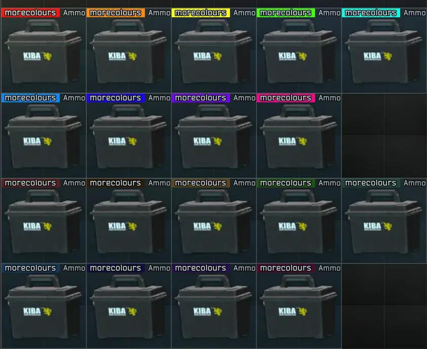
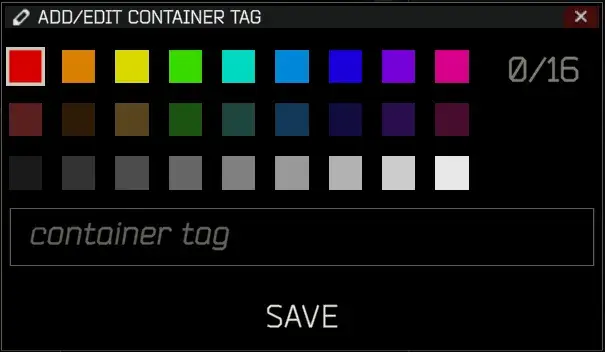

More Tag Colours
- Downloads
- 20,122
- Favourites
- 34
- Mod lists
- 101
I’m not sure if you’re like me, but I like to tag my cases. The problem is - there’s only 7 tag colours available in THE CITY. This is dumb. I’ve added additional colours for you to use to tag things. Now you can tag all the things!
There is now a config menu to adjust the original 18 colours to be whatever you want. Try to set them via F12 anywhere except the stash screen.
If you change them in the stash screen you must go back to the main menu and then re-enter the stash to update all colours.


- Download More Tag Colours
- Open the downloaded 7z file in 7-zip
- Select the BepInEx folder in the 7z file in 7-zip
- Drag the BepInEx folder from 7-zip into your SPT folder
Demonstration Video (yoink):

- Delete
/ROOTSPT/Bepinex/plugins/acidphantasm-moretagcolours - Done
If you enjoy my work - you can buy me a coffee~
Version
1.4.0
This version will only work for SPT 4.0.x
No functionality changes
Version
1.3.0
This version will only work for SPT 3.11.x
3.11 Update
Version
1.2.0
This version will only work for SPT 3.10.x
3.10 Update
Version
1.1.0
This version will only work for SPT 3.9.x
Added configuration options for the original 18 colours
Added 9 more tag colours in greyscale
(If you use the F12 config to edit colours, you must go back to the main menu then re-enter stash screen)
Version
1.0.0
This version will only work for SPT 3.9.0
Initial release